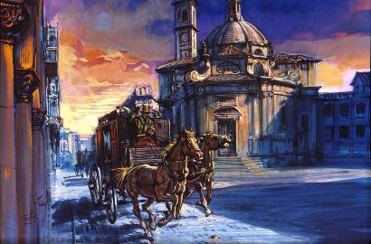
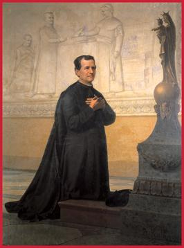
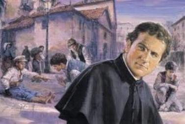
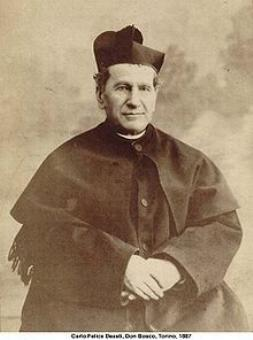
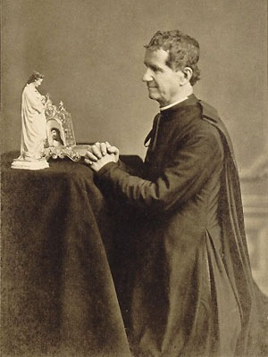

QUERIA SER PADRE
NOVAMENTE SOZINHO
Por
volta de Setembro de 1830, João passou a morar com o Padre Colosso, talvez para
anular de uma vez, qualquer resíduo de tensão com seu irmão 
João amava Padre Colosso e o considerava como um verdadeiro pai. Os estudos progrediram rapidamente e ele vivia numa felicidade que jamais podia imaginar.
Certa manhã do mês de Novembro de 1830, quando tinha ido a sua casa levar a roupa usada e buscar a roupa limpa, chegou uma pessoa para lhe dizer que Padre Colosso se sentira mal. Ele relembra: “Não corri, voei até a casa dele”. Tinha tido um enfarte, estava deitado numa cama, sem condições de dizer uma palavra. Mas indicou-lhe a chave de uma caixa, fazendo sinais para que não desse a ninguém. Foi tudo. Fechou os olhos e partiu para a eternidade. Ao João, só lhe restou chorar inconsolávelmente sobre o cadáver do seu segundo pai, dizendo: “Com ele morriam todas as minhas esperanças”.
A caixa era um cofre e dentro estavam 6 mil liras, toda a economia do Padre Colosso, que deixava para ele, para garantir o seu futuro e os seus estudos.
As pessoas que assistiram ao agonizante confirmaram o fato. Outras, porém, sustentavam que os gestos de um moribundo não têm valor, que só um testamento é que dá e tira os direitos.
Quando os sobrinhos do Padre Colosso chegaram, se portaram como gente de bem. Eles se informaram sobre o assunto e depois disseram a João:
- “Parece que o tio queria deixar esse dinheiro para você. Pegue, pois, tudo quanto quiser.”
João, na sua simplicidade, de cabeça baixa, pensou um pouco e respondeu:
- “Não quero nada” , e lhes entregou a chave do cofre.
Nas suas “Memórias”, Dom Bosco resume os acontecimentos numa única frase: “Vieram os herdeiros do Padre Colosso, entreguei-lhes a chave e todas as outras coisas”.
Agora com 15 anos de idade João estava novamente só: sem professor, sem dinheiro e sem perspectiva para o futuro. “Chorava inconsolado” , deixou escrito o que sentia.
ACERTOS EM CASA E ESTUDO
Dona Margarida, sua mãe, para acabar de vez com os atritos entre Antonio e João, decidiu dividir com o filho mais velho o patrimônio deixado pelo falecido pai, Francisco. E ela fez isto, aproveitando a oportunidade do casamento do Antonio que já estava marcado e se realizou no dia 21 de Março de 1831. Cada um para o seu lado, as brigas terminaram para sempre.
Em Dezembro, João passou a frequentar a Escola Pública de Castelnuovo d’Asti, que tinha como professor o Padre Manuel Virano. Foi um período difícil, porque embora fossem cinco quilômetros que teria de percorrer até a Escola, como eram dois turnos, de manhã e a tarde, ida e volta somava 20 quilômetros por dia. Então era uma caminhada forçada que ele teve de enfrentar. Depois, com a nomeação do Padre Virano para ser o Pároco em Mondônio, a Escola ficou nas mãos do Padre Nicola Moglia, que era grosseiro e não simpatizava com ele. Então, este tempo de estudo, foi um período cruel em sua vida.
MAS É PRECISO ESTUDAR
Sua mãe Margarida havia deixado Becchi e acompanhou o seu filho José, que fez uma sociedade com José Febraro e arrendaram uma propriedade em Sussambrino, para cultivar, dividindo entre eles os lucros e possíveis perdas.
Estamos no verão e João, que acompanhou sua mãe, se dedicou a estudar intensamente em Chieri, aumentando os seus conhecimentos e desenvolvendo os seus estudos.
Mas também não quer ser um peso para o irmão José. Por isso, com muito prazer e dedicação, ajudava nos trabalhos do campo. Na sua oficina rudimentar consertava ferramentas agrícolas e levava as vacas para pastar.
Na aldeia próxima de Montafia, celebravam a festa do Padroeiro e como sempre havia o “pau de cebo”, que agora estavam chamando de “árvore da fortuna”, porque lá em cima do mastro havia uma bolsa cheia de dinheiro, além de peças de salames, uma garrafa de vinho e uma caixa de lenços. Joãozinho pensou: “Preciso ganhar aquele dinheiro”.
O “pau de cebo” era muito alto, liso, besuntado de óleo e banha. Os garotos olhavam e arriscavam a subir. Partia a toda, cuspiam nas mãos e pulavam no pau, e subiam, subiam, e de repente paravam, acabava o gás, em meio à torcida que gritava e incentivava na escalada. Mas, não resistindo, acabava escorregando de volta, entre assobios e vaias.
Lá pelas tantas, depois de estudar bem a situação, João se aproximou do mastro. Calmamente olhou para cima, cuspiu nas mãos e grudou no poste. Começou a subir lentamente, sem pressa. A gritaria foi grande: uns aplaudiam, outros assobiavam, enquanto alguns vaiavam, a torcida era grande. De vez em quando ele parava se assentava nos calcanhares e descansava. O povo embaixo gritava firme sem parar, e impaciente, esperando que João também entregasse os pontos. Mas João estava disposto a ficar agarrado ao poste até um dia inteiro, se fosse necessário, pois aquele dinheiro era muito importante para ele. E com calma avançou até chegar encima. Pegou a bolsa com o dinheiro e segurou-a com os dentes, pegou um salame e desceu tranquilamente o “pau de cebo”. Foi uma festa.
VERGONHA DE PEDIR
È claro que o dinheiro do “pau de cebo” não era suficiente para ele se mudar para Chieri, a fim de continuar os seus estudos. Precisava de roupa, calçados, livros, e ainda pagar uma pensão mensal para comer e dormir. A sociedade do irmão José com o outro José não era nenhuma mina de ouro. Então ele precisava “dar os seus pulinhos” para arranjar dinheiro de alguma forma. Em Outubro ele disse a sua mãe:
- “Se a senhora não se importar, vou pedir esmola nas famílias da aldeia.”
Sacrifício duro para ser exercitado, e como é compreensível, o seu amor-próprio foi parar na “sola dos pés”. Mas ele queria ser Padre... E não tinha dinheiro... O jeito era partir para o sacrifício.
De casa em casa, ele humildemente chegava e dizia:
- “Sou o filho da Margarida Bosco. Vou a Chieri estudar para ser Padre. Minha mãe é pobre. Ajudem-me se puderem”.
Todos o conheciam, pois tinham visto as suas mágicas, seus malabarismos, seus sermões, e gostavam dele. Mas os ricos eram poucos. Deram-lhe ovos, milho, e um pouco de trigo.
Acontece que Lucia Matta era viúva e estava mudando para Chieri com o objetivo de dar assistência ao seu filho estudante. Então, Margarida conversou com ela e combinaram para o João morar na casa junto com o filho dela, em Chieri. A pensão ficou acertada em 21 liras por mês, e como Margarida não teria todo aquele dinheiro mensalmente, combinaram que parte do pagamento mensal seria feito no fornecimento de farinha e vinho, e João se comprometeu ajudar a carregar água para a residência, preparar a lenha para o fogo e para a estufa, assim como estender a roupa no varal.
ESTUDANDO EM CHIERI

João estava com 16 anos completos e por ter sido criado no campo e na lavoura, era forte e tinha boa estatura, em comparação com seus colegas de classe que eram franzinos e de pouca idade.
Disposto a estudar e realizar o seu ideal se empenhou decididamente nos estudos e de tal modo, que no final do primeiro ano de estudos João Bosco já estava terminando a quarta série.
Chieri era uma cidade pequena, situada a 10 quilômetros de Turim, na Itália. Na época tinha cerca de 9 mil habitantes no máximo e nela se concentrava Conventos, tecelões e estudantes.
Dona Margarida às vezes visitava a senhora Lúcia em Chieri para saber as notícias do seu filho. As notícias sempre eram boas, tanto nos estudos como no trabalho caseiro. João realizava cuidadosamente os serviços de casa e era muito piedoso e estudioso. E ainda ajudava o filho da senhora Lúcia, que era mais velho do que ele, mas que não gostava de estudar. João se tornou seu amigo, conseguindo até levá-lo à Igreja para ele rezar e pedir perdão a DEUS por ser preguiçoso.
Certo dia, na quarta série do curso, o professor de latim explicava “A Vida de Agesilau”, escrita por Cornélio Nepos, escritor famoso na época. Mas João por um descuido esqueceu o livro de latim na pensão e só levou a Escola, o livro de gramática latina. Os colegas observando, viram que ele tinha aberto à gramática bem na frente, para o professor não perceber que ele estava sem o livro de Cornélio. Mas o professor desconfiando que algo estivesse acontecendo, e vendo que os meninos olhavam muito para ele, convocou João a ler o texto latino do livro de Cornélio Nepos. João se levantou e com a gramática na mão, para disfarçar, repetiu de cor todo o texto latino e as explicações. Os colegas admirados, instintivamente bateram palmas. O professor ainda sem conhecer a verdade, se irritou e teve de gritar para manter a disciplina. E logo depois, conhecendo a verdade, pegou a gramática do João e falou:
- “Por sua feliz memória, o senhor está perdoado. Tem sorte em ser assim. Procure usá-la sempre para o bem”.
Semelhante a esta passagem aconteceram outras, um pouco diferenciadas, mas apresentadas de maneira curiosa, deixando em realce a extraordinária capacidade de João memorizar os textos. Teve ocasiões em que ele chegou a sonhar com um texto que o professor ia passar como tarefa na aula.
Anos mais tarde, já sacerdote, quando ouviam falar que Dom Bosco teve um sonho, todos ficava na expectativa e ligados, porque em sonhos, ele conseguia ler os pecados dos seus jovens, previa a morte de reis e até adivinhava a carreira brilhante de um humilde moleque jogador de bolinhas de gude.
OS COMPANHEIROS E COLEGAS DE JOÃO
Como em toda comunidade, existiam alunos maus, que davam maus conselhos e maus exemplos. E na verdade, os companheiros maus, que queriam levá-lo às confusões eram os mais desleixados nos estudos, e assim, começaram a pedir ao João que os ajudassem nos deveres escolares, porque João era competente e estudava com seriedade. E por isso mesmo, ajudou-os e até exagerou nas ajudas, passando-lhes cola de traduções inteiras. Numa ocasião João foi pego pela fiscalização do colégio passando cola de uma tradução. Foi salvo pela intervenção de um Padre professor que era seu amigo. E assim ele foi conquistando os seus colegas, que logo começaram a procurá-lo no recreio. Antes por causa dos deveres escolares, depois para ouvir as histórias dele e, por fim, sem nenhum motivo, simplesmente pelo prazer de estar com ele. Juntos, formaram uma espécie de clube que João batizou com o nome de “Sociedade da Alegria”, que tinha um regulamento muito simples:
1 – Nenhuma ação, nenhuma conversa indigna de cristão.
2 – Cumprir os próprios deveres escolares e religiosos.
3 – Alegria.
Para Dom Bosco, “a alegria é a profunda satisfação que nasce de saber que estamos nas mãos de DEUS e, portanto, em boas mãos. É a palavra que indica um grande valor: a esperança cristã”.
Em 1832 João era o capitão de um pequeno exército. Nos recreios jogavam malha, andavam de pernas de pau e corriam pelas áreas da Escola para ver quem era mais veloz. Quando se cansavam João fazia mágicas: do copinho de dados tirava uma centena de bolinhas coloridas; de um pote vazio tirava uma dúzia de ovos; tirava bolas de vidro do nariz dos espectadores; adivinhava quanto dinheiro trazia no bolso; e com um simples toque de dedos, transformava em pó moedas de qualquer metal. Era uma farra saudável e jubilosa. E do mesmo modo, como era antes em Becchi, toda aquela alegria terminava em oração. E mais, nos dias santos, os meninos iam juntos à Igreja de Santo Antonio, onde os jesuítas faziam uma catequese animada, cheia de histórias.
UM SALTIMBANCO VISITA CHIERI
Certo domingo um profissional malabarista apareceu na cidade fazendo todo tipo
de equilibrismo e acrobacias, e desafiando os meninos mais fortes na 
João reuniu os melhores colegas do seu grupo para decidir sobre a presença do artista:
- “Se esse sujeito continuar a dar espetáculo nas tardes de domingo, a nossa Sociedade corre o risco de acabar. Precisamos desafiá-lo ou chegar a um acordo.”
João tinha 17 anos e fisicamente estava muito bem. E por isso mesmo, um dos colegas da Sociedade, sem medir as consequências, contou ao saltimbanco o que João havia dito. E assim, de imediato ele foi envolvido num desafio: “um estudante contra o atleta profissional.”
O lugar escolhido foi a Avenida da Porta Torinese. O percurso consistia em atravessar correndo toda a cidade. A aposta era alta. João não tinha dinheiro, mas a Sociedade o bancou. Uma multidão veio assistir.
Dada a saída, o saltimbanco tomou a dianteira de uns 10 metros. João manteve a cadência, passou o atleta e disparou na frente. O saltimbanco ficou tão atrás que parou na metade do percurso, dando a vitória ao João.
Tudo devia estar acabado, mas o atleta quis a desforra, e desafiou João a saltar, valendo a aposta o dobro do valor inicial. O desafio foi aceito. No local escolhido, precisava saltar um pequeno curso d’água que tinha na margem do outro lado, um pequeno muro de proteção. O atleta levantou vôo e aterrissou na margem, perto do muro. João utilizando de hábil estratégia deu o mesmo salto, mas projetou as suas mãos para frente, pulando o riacho e apoiando as mãos em cima do pequeno muro, passou para o outro lado do muro, alcançando maior distância e vencendo a competição. O atleta ficou com a cara no chão, pelo dinheiro que perdeu e pela multidão que começou a vaiá-lo pelo fracasso.
Nas suas “Memórias” Dom Bosco descreve que o saltimbanco envergonhado quis fazer nova aposta, agora como equilibrista e perdeu também. E por último, na aposta derradeira, desafiou João para ver quem subia mais alto numa árvore escolhida. E João venceu mais uma vez. Embaixo, os aplausos explodiram, os colegas do João se abraçavam e comemoravam a vitória, enquanto o infeliz atleta estava quase chorando. Então João lhe restituiu o dinheiro que ele tinha perdido, com a condição dele pagar um almoço de confraternização para o João e os colegas da Sociedade, no restaurante do Muretto. Na despedida o atleta falou:
- “Com a devolução deste dinheiro vocês evitam a minha ruína e lhes sou agradecido. Vou me lembrar de vocês com prazer. Mas nunca mais farei apostas ou desafios com estudantes”.
AGORA ELE VAI PARA O SEMINÁRIO
O grande sonho dele era ser sacerdote.
Mas o caminho continuava difícil, porque ele não tinha emprego fixo, se aplicava nos
estudos e fazia pequenos 
Conversando com o João, ele o aconselhou que concluísse o ano de retórica e depois entrasse no Seminário, acrescentando:
- “A Divina Providência lhe fará saber o que deve fazer. Quanto ao dinheiro, não se preocupe: alguém providenciará”.
E assim no dia 25 de Outubro, na Igreja de Castelnuovo d’Asti, antes da segunda Missa, o senhor Pároco, Padre Cinzano, vestiu João com a batina de seminarista. E diante das palavras do sacerdote:
- “O SENHOR te revista do homem novo, criado segundo o Coração de DEUS, na justiça, na verdade e na santidade”.
(Mentalmente João Bosco ajuntou o seu desejo)
- “Meu DEUS, que eu comece deveras uma vida nova, conforme a Vossa Santa Vontade. MARIA sede a minha salvação”.
E em casa, diante da imagem de NOSSA SENHORA, fez uma promessa formal, a qual queria cumprir à custa de qualquer sacrifício:
1 – Não irei a bailes, teatros, espetáculos públicos
2 – Não farei mais mágicas, nem serei saltimbanco ou irei à caça.
3 – Serei sóbrio no comer, no beber e no repouso.
4 – Lerei coisas de religião.
5 – Combaterei pensamentos, conversas, palavras e leituras contrárias a castidade.
6 – Farei cada dia um pouco de meditação e de leitura espiritual.
7 – Contarei todos os dias fatos e pensamentos que façam bem.
A mãe de João lhe escreveu um pequeno bilhete e colocou dentro do baú que continha o enxoval do filho. Nele estava escrito:
- “João, você vestiu o hábito de Padre, e como é natural, sinto toda a alegria que uma mãe que ama o seu filho, pode sentir. Porém, lembre-se, não é o hábito que dignifica o homem, mas as suas virtudes. Assim, se algum dia duvidar da sua vocação, não desonre o hábito. Deixe-o imediatamente. Prefiro que meu filho seja um pobre, mas honrado camponês, do que um sacerdote que descuide dos seus deveres e obrigações. Quando você nasceu, eu o consagrei a NOSSA SENHORA. Quando começou os seus estudos, recomendei-lhe que a amasse. Agora recomendo que sejas todo Dela”.
As lágrimas desceram caudalosas dos olhos brilhantes do João, e ele entrou no Seminário de Chieri.
AS FÉRIAS DE VERÃO
No dia 24 de Junho de 1837, festa de São João Batista, seu Santo protetor, João pegou a estrada branca, coberta de neve, que vai de Chieri a Castelnuovo, e em seguida, subiu mais 12 quilômetros para Sussambrino, propriedade de seu irmão José.
José, com 20 anos de idade, tinha se casado em 1833, com Maria Calosso, natural de Castelnuovo d’Asti. Sua primeira filha, Margarida, viveu apenas três meses. Mas na primavera de 1835 chegou a Filomena.
A pequena Filomena ficou encantada com a chegada do tio João que vai ser sacerdote, e cheia de prazer o contemplava trabalhando com a plaina, o torno, a forja, e admirada o vê cortando e costurando, e lhe fazendo muito bonitas bonecas de pano.
Deixando a humilde oficina, João dá assistência aos parreirais que já começam a mostrar tenros cachos de uvas, e também ao trigo, que pinta de dourado os campos da propriedade. Pega a foice e entra na longa fila dos ceifadores de trigo, com grande chapéu de palha cobrindo a cabeça, mas permitindo o suor correr pelo rosto e gotejar no chão. E sente muito júbilo nessa atividade ao ar livre, depois de oito meses de estudos, quase recluso na sala de aula do Seminário.
PADRE SEGUNDO A ORDEM DE MELQUISEDEC

Em 26 de Maio de 1841, se tornou Diácono e começou o retiro espiritual a fim de se preparar para a ordenação sacerdotal.
No dia 5 de Junho de 1841, na Capela do Arcebispado, João Bosco vestindo a alva, deita-se no chão diante do altar, ao mesmo tempo em que se ouve o canto gregoriano invocando o nome dos Santos. Repleto de emoção, João se levanta e vai ajoelhar diante do senhor Arcebispo, Dom Luís Franzoni, que impõem as mãos na sua cabeça, invocando o ESPÍRITO SANTO para que venha e o consagre Sacerdote para sempre.
Alguns minutos depois, Padre João Bosco unindo-se a voz do senhor Arcebispo, inicia a sua primeira concelebração. Tornou-se “Don Bosco” , (porque “Don” em italiano significa Padre).
Padre João Bosco celebrou a primeira Santa Missa na Igreja de São Francisco de Assis, em Turim, no Altar do Anjo da Guarda, assistido pelo Padre Cafasso, seu benfeitor e Diretor. E então disse: “No momento em que se recordam os falecidos, me lembrei das pessoas queridas, dos meus benfeitores, especialmente do Padre Calosso, que sempre considerei meu grande benfeitor.”
A Segunda Santa Missa ele celebrou no Grande Santuário de Nossa Senhora, em Turim, no Altar da Consolata. E sua terceira Santa Missa foi na quinta-feira seguinte, Festa de "Corpus Christi", na sua terra natal, onde sua mãe, parentes e todos os seus amigos o aguardavam ansiosamente.
RECEBEU DIVERSOS CONVITES DE TRABALHO
Uma nobre família de Gênova quer que ele seja o preceptor de seus filhos, ensinando e preparando-os para a vida. Ofereceu-lhe além de casa e comida, mil liras por ano.
Os habitantes de seu povoado insistem em que ele permaneça em Murialdo substituindo o Padre Vigário que se aposentou e seja o Capelão do lugarejo, inclusive garantindo-lhe quase duas mil liras por ano.
Dom Bosco, em dúvida, ficou pensando:
- “Mas não foi para ganhar dinheiro que eu me tornei sacerdote”!
Por essa razão. Decidiu e foi a Turim conversar com Padre Cafasso que era o seu confessor e conselheiro:
- “Que devo fazer?”
- “Não aceite nada. Venha para o “Convitto Ecclesiastico”. Aqui você completará a sua formação sacerdotal”.
Padre Cafasso vê longe. Compreende que uma família, ou um Vilarejo será muito pouco para dar vazão à carga humana e espiritual que Dom Bosco tinha. Turim, ao contrário, é cidade capaz de fazer isso, e muito bem. Cidade grande em desenvolvimento e com progresso, nela encontrará bairros novos, tempos novos e novos problemas. Como amigo e benfeitor dele, Padre Cafasso depois dos conselhos, ficou apenas como observador, para ir corrigindo o “rumo da nau” de seu protegido e moderando a sua velocidade.